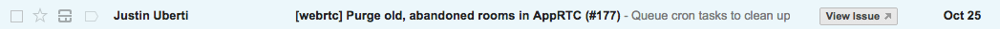
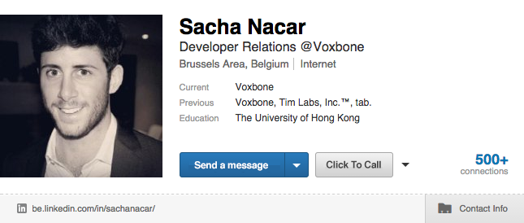

Turning Browsers Into Call Centers
By Sacha Nacar, Developer Community Manager

Sacha Nacar
Developer Community Manager @ Voxbone
 @sachanacar
@sachanacar
git.io/Rtxo_A
bit.ly/wowrtc14
#WOWRTC
VOXBONE SIMPLIFIES COMMUNICATIONS
By bringing local voice services to the cloud.
credit: www.voxbone.com
MediaStream
RTCPeerConnection
RTCDataChannel
credit: www.iswebrtcreadyyet.com
credit: www.voxbone.com


DEMO!
What just happened?
- Purchasing number and setting it for WebRTC
- Download SDK and add credentials
- Code!
// Make Call
var dest = "+32000000000";
voxbone.WebRTC.call(dest);
// Add DTMF
var tones = ["0", "1", "2", "3", "4", "5", "6", "7", "8", "9", "#", "*"];
voxbone.WebRTC.sendDTMF(tones[0]);
DEVELOPERS.VOXBONE.COM
USE CASES
Examples of WebRTC in the wild.
*potential
Gmail


Twitter Support Bot
Click2Call Generator - Wix Sites
Conference Bridge
Click2Call Email Footer
GrannyCall
Get Started!
Contact me for a free test phone number (no registration required).